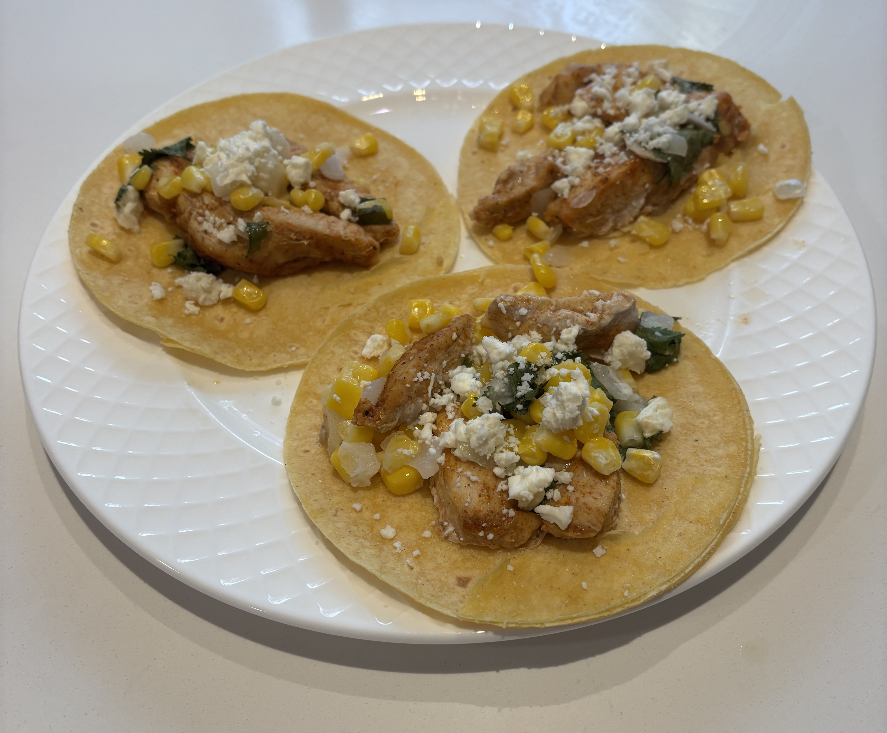

Home
Street Corn Chicken Tacos

Ingredients
- 1 Tbsp chilli powder, divided
- 1 tsp smoked paprika
- 2 Tbsp brown sugar
- 1/2 Tbsp ground cumin
- 1/2 tsp onion powder
- 1/4 tsp garlic powder
- 1.5 lb boneless, skinless chicken breast cut into thin strips
- 1/3 cup mayo divided
- 3 ears corn cut off the cob
- 1/2 onion chopped
- 1/4 cup chopped fresh cilantro
- 4 Tbsp lime juice
- 1/2 cup, crumbled cotija cheese divided (feta works as a substitute)
- 16 6 inch corn tortillas warmed
- Salt and pepper
Steps
- Preheat the oven to 425 degrees F.
- In a small bowl, whisk together chili powder (1Tbsp), smoked paprika (1 tsp), brown sugar (2 Tbsp), ground cumin (1/2 Tbsp), onion powder (1/2 tsp), garlic powder (1/4 tsp), salt (1/2 Tbsp), and ground black pepper (1 tsp) until combined
- In a medium bowl, toss together the cut up strips of chicken breasts, 3 Tbsp of mayo, and the seasoning blend, and toss until the chicken is fully coated
- Spread a large sheet pan with cooking spray, then place the chicken in a single layer spread across the baking sheet. Place into oven and bake for 15 min
- In a medium bowl add the corn, onion, fresh cilantro, 2 Tbsp of mayo, 4 Tbsp of lime juice, 1/4 cup of cotija cheese, 1/2 tsp salt, and 1/4 tsp of ground black pepper and mix well
- Remove the chicken from the oven. Use a spatula to make room for the vcorn. Add corn mixture to the sheet pan, nestling it around the chicken. Return to the oven for 10 min or until the chicken is thoroughly cooked and the corn is tender.
- Turn the broiler on high, then broil the sheet pan on the top rack for 1-2 min to crisp up the tops of the chicken.
- Remove from the oven. Top with remaining cotija cheese and serve with warm tortillas, and your favorite toppings.